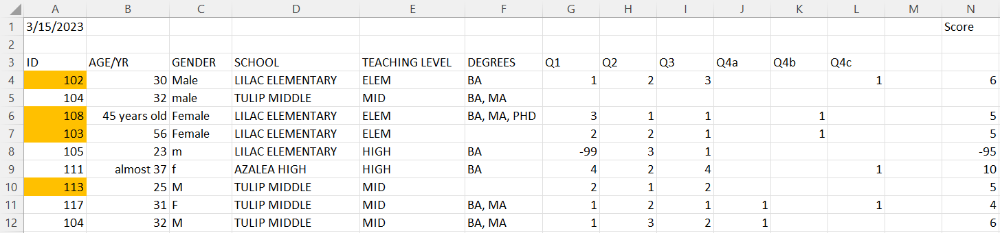
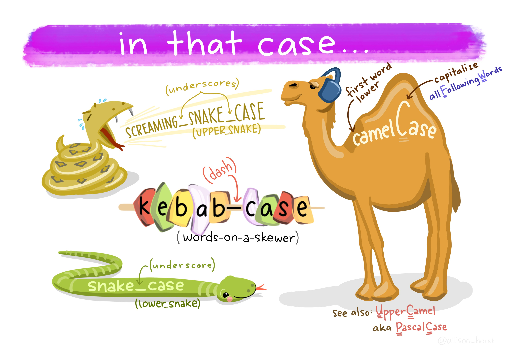
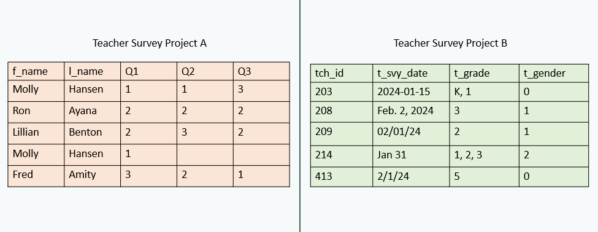
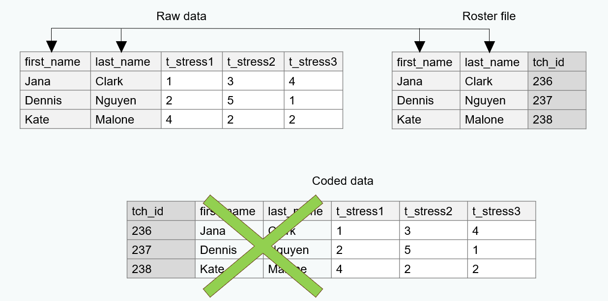
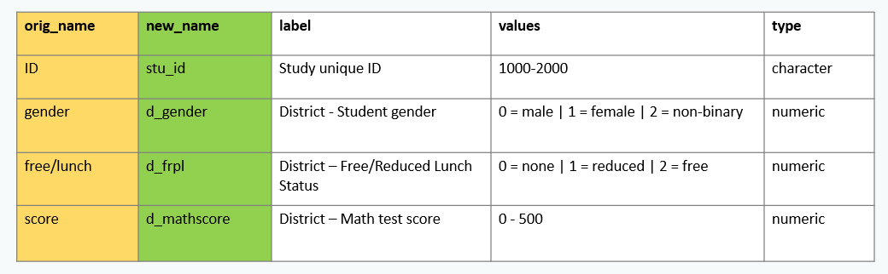

Data Cleaning for Data Sharing
Using R
NCME Annual Meeting
About the Speaker
- Independent Research Data Management Consultant
- Previously data manager for the Missouri Prevention Science Institute
- Co-organizer for R-Ladies St. Louis
- Co-organizer for the POWER Data Management in Education Research Hub
- Author “Data Management in Large-Scale Education Research”
Introductions
- Your name
- Your affiliation
- Your role
- Your data cleaning experience
- Original data that you/your team has collected
- External datasets
- Your experience with R
- Tidyverse experience?
3 Phases of Data
A Sampling of Open Datasets
Learning Objectives
- Understand how to assess a data set for 7 data quality indicators
- Be able to review a data set and apply a list of standardized data cleaning steps as needed
- Feel comfortable using R code to clean a data set using our standardized steps
- Understand types of documentation that should be shared alongside data
Schedule
| Time | Topic |
|---|---|
| 8:45 - 9:00 | Intro/Logistics |
| 9:00 - 9:45 | Fundamentals of Data Organization |
| 9:45 - 10:30 | Standardized Data Cleaning Checklist |
| 10:30 - 10:45 | Break |
| 10:45 - 12:30 | Data Cleaning Functions |
| 12:30 - 12:45 | Documentation for Data Sharing |
Logistics
Exercises
Login to Posit Cloud workspace: https://posit.cloud/content/7872027.
If Posit Cloud doesn’t work, download materials locally:
Feel free to interrupt me with questions/comments at any time ✋.
Get up and move around as much as you need to üö∂.
Data Quality Indicators
The Data are Ready
7 Data Quality Indicators
Analyzable
Interpretable
Complete
Valid
Accurate
Consistent
De-identified

Analyzable
- Data should make a rectangle of rows and columns
- The first row, and only the first row, is your variable names
- The remaining data should be made up of values in cells
- At least one column uniquely defines the rows in the data (e.g., unique identifier)
Analyzable
- Column values are analyzable
- Information is explicit
Analyzable
Analyzable
- Only one piece of information is collected per variable
Exercise
What data quality issues do you detect for the “analyzable” indicator?
01:00
Solution
- Data does not make a rectangle
- Color coding used to convey information
- More than one piece of information in a variable
- Blank values implied to be 0 for
Q4variables
Interpretable
- Variable names should be machine-readable
- Unique
- No spaces or special characters except
_- This includes no
.or-
- This includes no
- Not begin with a number
- Variable names should be human-readable
- Meaningful (
genderinstead ofQ1) - Consistently formatted (capitalization and delimiters)
- Consistent order of information
w1_t_mast1,w1_t_mast2,w1_t_gad1,w1_t_gad2,w1_t_gender
- Meaningful (

Interpretable
- If you are sharing data in SPSS, SAS, or Stata format, you may consider adding embedded metadata (i.e., variable label and value labels)
- When publicly sharing data, it is recommended to share data in at least one non-proprietary format (e.g., CSV)
Exercise
What data quality issues do you detect for the “interpretable” indicator?
01:00
Solution
- Spaces and special characters used in variable names
- Some variable names are unclear
- Inconsistent use of capitalization
Complete
- Cases
- The number of rows in your dataset should total to your sample N
- No missing cases
- No duplicate cases (i.e., no unique identifier)
- The number of rows in your dataset should total to your sample N
- Variables
- The number of columns in your dataset should total to what you planned to have
- No missing variables
- No unexpected missing data
- If you collected the data, it should exist in the dataset
- The number of columns in your dataset should total to what you planned to have
Helpful documentation
Tracking Database

Data Dictionary
Exercise
What data quality issues do you detect for the “complete” indicator?
01:00
Solution
- The data contain a duplicate ID (104)
Valid
- Variables conform to your planned constraints (i.e., review your data dictionary)
- Planned variable types (e.g.,
numeric,character,date) - Allowable variable values and ranges (e.g.,
1-5) - Item-level missingness aligns with variable universe rules and skip patterns
- Planned variable types (e.g.,
Helpful documentation
Exercise
What data quality issues do you detect for the “valid” indicator?
01:00
Solution
AGE/YRdoes not adhere to our planned variable type- Values in
Scorefall out of our expected range
Accurate
- Information should be accurate based on any implicit knowledge you have
- For instance, values should not exist for a school where you know that data was not collected that wave
- Accurate within and across sources
- A date of birth collected from school records should match the date of birth provided by the student
- If a student is in 2nd grade, they should be associated with a second grade teacher
Exercise
What data quality issues do you detect for the “accurate” indicator?
01:00
Solution
- ID 105 has conflicting information for
TEACHING LEVELandSCHOOL
Consistent
Variable values are consistently measured, formatted, or categorized within a column
Variables are consistently measured across collections of the same form
Exercise
What data quality issues do you detect for the “consistent” indicator?
01:00
Solution
- Values for
GENDERare not consistently categorized
De-identified
De-identified - Indirect Identifiers
- Open-ended questions
- These variables may contain information that can directly or indirectly identify individuals.
- Outliers
- If someone has extreme values for a variable, it may be easier to identify that individual.
- Small cell sizes
- NCES Standard 4-2-10, suggests that all categories have at least 3 cases to minimize risk
- Combinations of variables, or crosstabs, can also create small cell-sizes
- race + gender + grade level
- Also consider what other public information could be used to re-identify someone
- Linking department of education data with your data (e.g., by size and location of school)
Exercise
What data quality issues do you detect for the “de-identified” indicator?
01:00
Solution
- Replace School Name with an unique ID
- Review combination of demographics to see if other alterations are necessary
Biggest Advice
The number one way to reduce data errors is to make a plan before you collect data
Correct data at the source
- Plan the variables you want to collect
- Build your data collection/entry tools in a way that follows your plan
- Test your data tools before collecting/entering data
- Check your data often during data collection/entry
Data Cleaning Checklist
Data Cleaning
Standard Data Cleaning Checklist
Import the raw data
Review the raw data
Find missing data
Adjust the sample
De-identify data
Drop irrelevant columns
Split columns
Rename variables
Normalize variables
Standardize variables
Update variable types
Recode variables
Construct new variables
Add missing values
Validate data
Save clean data
Import raw data
Review data

Find missing data
Adjust the sample
De-identify data
De-identify data
De-identify data
| Source | Resource |
|---|---|
| Alena Filip | Table 2 provides pros and cons of various de-identification methods |
| J-PAL | Table 3 provides a list of direct and indirect identifiers and recommended removal methods |
| Schatschneider, et.al | Deidentifying Data Guide |
Drop irrelevant columns
Split columns
Rename variables
Normalize variables
- Compare the types in your raw data to the types you expected in your data dictionary. Do they align?
- If not, what needs to be done so that they do
Standardize variables
- Are columns consistently measured, coded, and formatted according to your data dictionary?
Update variable types
Recode variables
Construct additional variables
Add missing values
Data validation
Data validation
- Complete
- Check for missing/duplicate cases
- Check Ns by groups for completeness
- Correct for missing/too many columns
- Check for missing/duplicate cases
- Valid and consistent
- Check for unallowed categories/values out of range
- Check ranges by groups
- Check for invalid, non-unique, or missing study IDs
- Check for incorrect variable types/formats
- Check missing value patterns
- Check for unallowed categories/values out of range
- Accurate
- Agreement across variables
- De-identified
- All direct identifiers are removed
- All indirect identifiers managed as needed
- Interpretable
- Variables correctly named
Export data
Creating a data cleaning plan
BREAK!

BREAK!
15:00
Cleaning in R
Packages
R has many built in (base) functions
We can also use functions that live in packages that we can install onto our computer
Once installed, there are two ways to call packages
- You may see both methods used in these slides
Tidyverse
An opinionated collection of R packages designed for data science
All packages share an underlying design philosophy, grammar, and data structures


Tidyverse
Selecting test_score and grade_level from our data frame named sch_data
Pipes
2014+ magrittr pipe
%>%2021+ (R \(\geq\) 4.1.0) native R pipe
|>
Isabella Velásquez’s blog post Understanding the native R pipe |> (2022)
To turn on the native pipe:
Tools → Global Options → Code → Editing → Use Native Pipe Operator
Open our data
Take 5 minutes to open and look at our data file.
- Log in to Posit Cloud and navigate to our project
- Open the data folder and open “sample_tch_svy_raw.csv”
05:00
Import our data
Common data importing functions
read_csv()from thereadrpackageread_excel()from thereadxlpackageread_sav()from thehavenpackageLearn more about importing multiple files at once here
Which function should we use to read in our sample data?ü§î
Import our file
read_excel()has several arguments.- path
- sheet = NULL
- col_names = TRUE
- na = “”
- skip = 0
- Type
?read_excel()in your console to see more arguments
Exercise
Take 3 minutes to import the data.
- Open “exercises.Rmd” in our Posit Cloud project.
- Navigate to exercise 1.
- Update the code and run the code chunk using the green arrow.
- If you get stuck, you can open “solutions.Rmd”
03:00
Review our data
- How many rows?
- In this hypothetical situation, we assume we are not missing any cases
- However, there may be duplicates
- How many columns?
- Compare to our data dictionary
- What are the variable values and ranges?
- Compare to our data dictionary
- How much missing data do we have?
There are several functions we can use to explore data
dplyr::glimpse()skimr::skim()base::summary()summarytools::dfSummary()Hmisc::describe()
Exercise
Take 5 minutes to review our data.
- Navigate to exercise 2.
- Run the code.
- Write down any potential issues you see in the data.
- Open “sample_tch_svy_data_dictionary.xlsx”.
- What issues do you see when you compare the data to our data dictionary?
- Review “sample_tch_svy_cleaning-plan.txt”.
- How does it compare to the issues you wrote down?
05:00
Data Cleaning for Data Sharing // Cghlewis.github.io/ncme-data-cleaning-workshop/